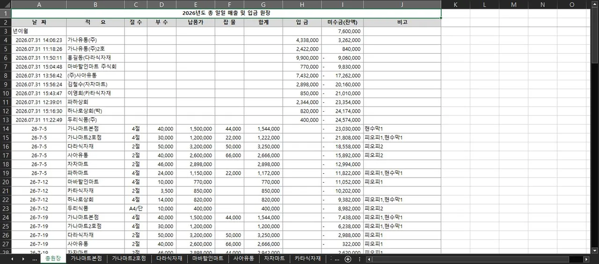
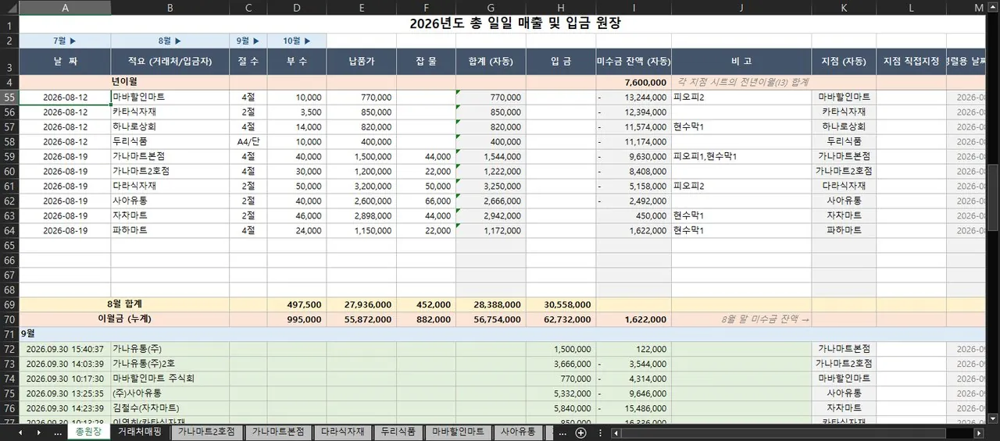

고객 맞춤 제작 · 업무 자동화05 / 10
납품 거래장부엑셀에서 프로그램으로
엑셀 장부에 두 번씩 적던 납품과 입금을, 한 번 적으면 받을 돈까지 계산되는 Windows 프로그램으로 바꿨습니다. 엑셀을 먼저 고치고, 그래도 남는 문제 때문에 프로그램으로 옮겼습니다.

이야기
- 01자동화 전
- 마트 전단, POP, 현수막을 납품하는 업체가 같은 거래를 엑셀 총원장과 거래처 시트에 두 번씩 적고, 월말에는 두 합계의 차액을 손으로 맞췄습니다. 입금내역을 붙여넣을 때마다 수식이 깨지곤 했습니다.
- 021단계 · 엑셀
- 먼저 엑셀을 고쳤습니다. 총원장 한 곳에만 적으면 거래처 시트와 현황판이 수식으로 채워지게 했고, 차액이 0이면 정상이라고 알려 주는 검증 칸도 넣었습니다.
- 03남은 문제
- 행을 붙여넣거나 칸에 직접 쓰면 수식이 지워졌습니다. 그래서 수식이 아예 없는 프로그램으로 옮겼습니다.
- 042단계 · 프로그램
- 메뉴는 '납품 적기', '입금 적기'처럼 할 일 이름입니다. 통장 내역을 붙여넣으면 입금자 이름으로 거래처를 찾아 주고 이미 적은 입금은 뺍니다. 엑셀로 저장하면 예전 장부 모양 그대로 나옵니다.
- 05드러난 불일치
- 옮기면서 원본 장부끼리 맞지 않는 줄이 드러났습니다. 임의로 고치지 않고 목록으로 정리해 고객에게 확인받았습니다.
끌어서 비교해 보세요
왼쪽은 손으로 적던 총원장, 오른쪽은 엑셀 자동화 뒤 총원장입니다. 회색 칸(합계, 잔액, 지점)은 자동 계산입니다.


단계마다 화면
모든 사진은 눌러서 크게 볼 수 있습니다.
자동화 전
1단계 · 엑셀 자동화
2단계 · 프로그램 '거래장부'
공개 범위 · 고객 이름과 실제 장부 숫자는 공개하지 않습니다. 화면 속 업체와 금액은 모두 예시입니다.